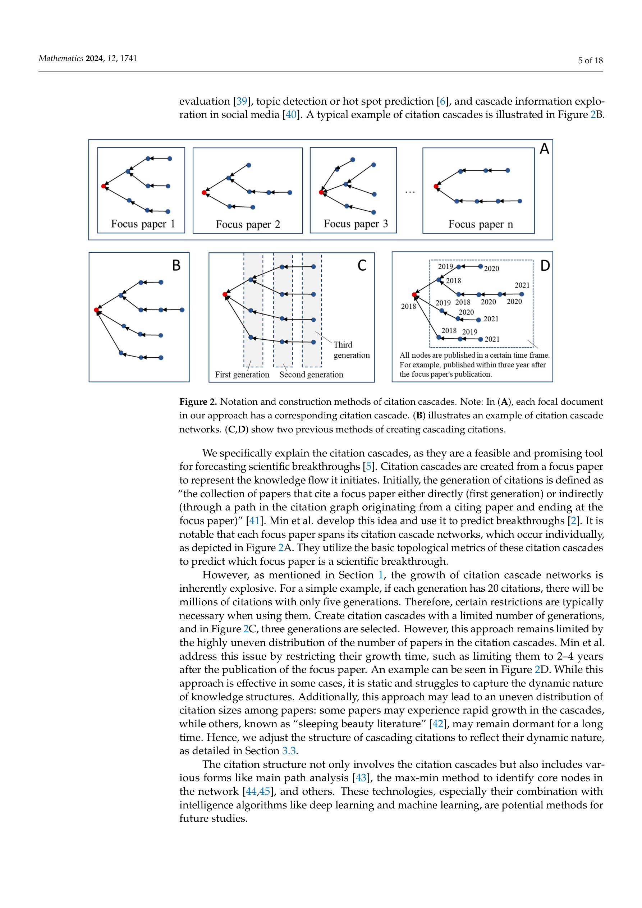
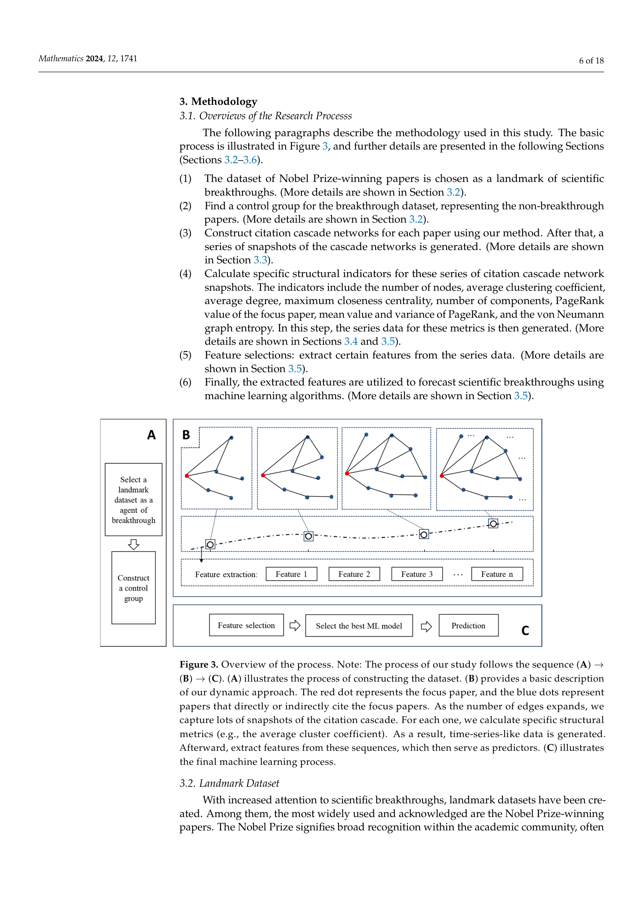
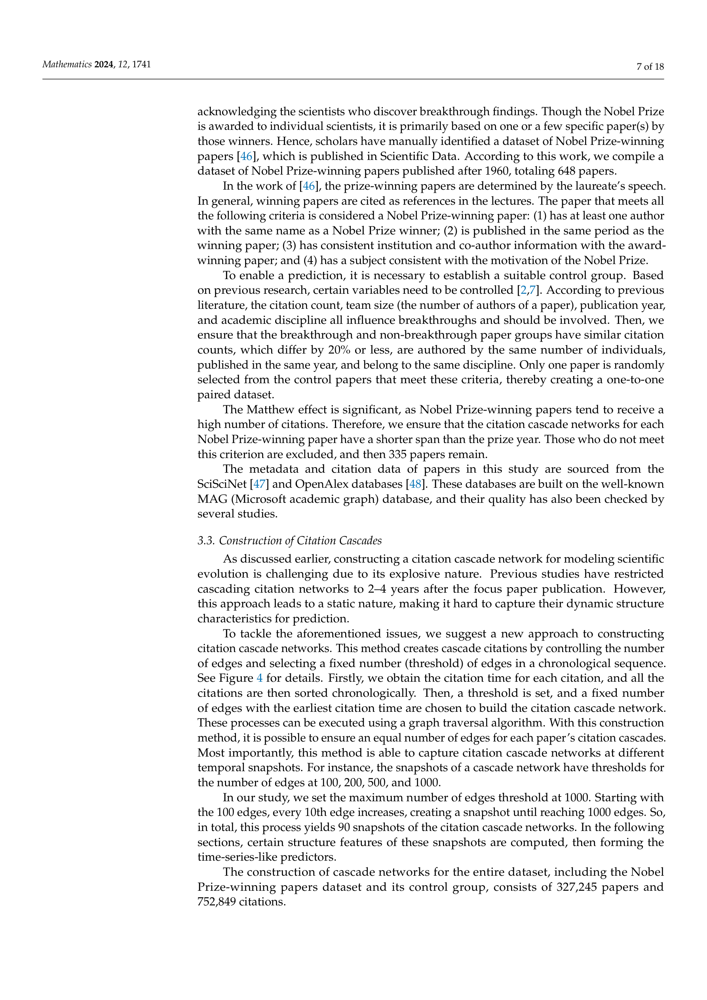
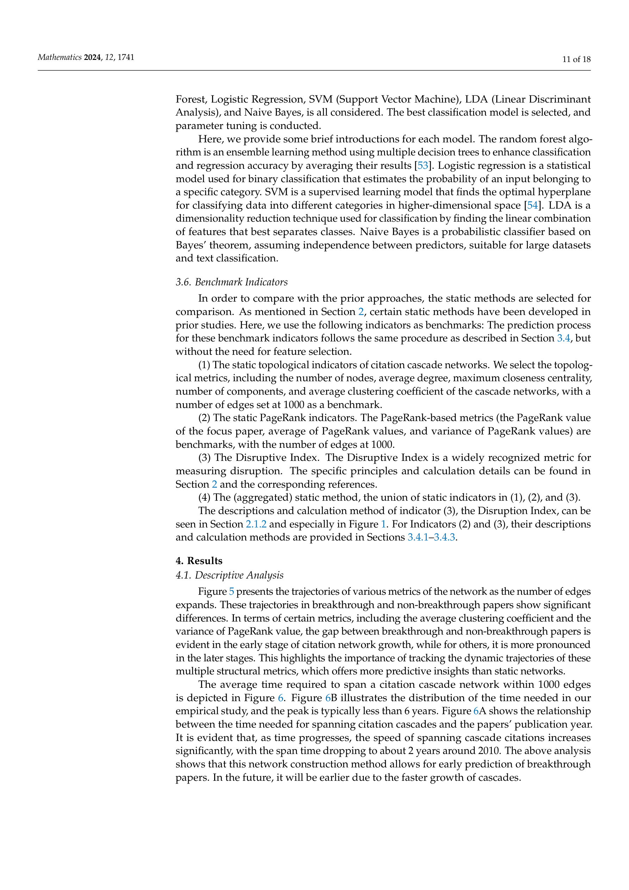

Figure 1
저자: Houqiang Yu, Yian Liang, Yinghua Xie | 날짜: 2024-06-03 | Journal: Mathematics | DOI: 10.3390/math12111741
Figure 1
인용 캐스케이드의 동적 구조 변화로 과학적 돌파구를 예측할 수 있는가? 그렇다. 기존 정적 스냅샷 방식 대비, 인용 캐스케이드를 시간 순서로 성장시켜 동적 궤적을 추출하면 노벨상 수상 논문 예측에서 ROC-AUC가 약 7% 향상되었다. 기본 위상 지표(평균 차수, 클러스터링 계수 등), PageRank, von Neumann 그래프 엔트로피의 동적 궤적이 돌파구 논문을 구분하는 데 효과적이었으며, 기존 방법보다 더 이른 시점에서의 예측도 가능했다.

Figure 2
과학적 돌파구 예측은 과학정책과 자원 배분에 중요하나, 기존 방법(Disruption Index, 정적 위상 지표)의 예측 정확도는 AUC 67-69%에 그쳤다. 핵심 원인은 지식 구조의 "극적 변화"를 정적 스냅샷으로만 포착했기 때문이다. 돌파구가 본질적으로 동적 현상(지식 구조의 시간적 재편)임에도 불구하고, 인용 캐스케이드의 동적 진화 정보를 활용한 예측 방법은 없었다.

Figure 3

Figure 4

Figure 5
총평: 인용 캐스케이드의 동적 구조 진화라는 새로운 관점을 도입하여 돌파구 예측 성능을 개선했으나, 제한된 벤치마크와 실용적 성능 수준의 한계가 남아있다.